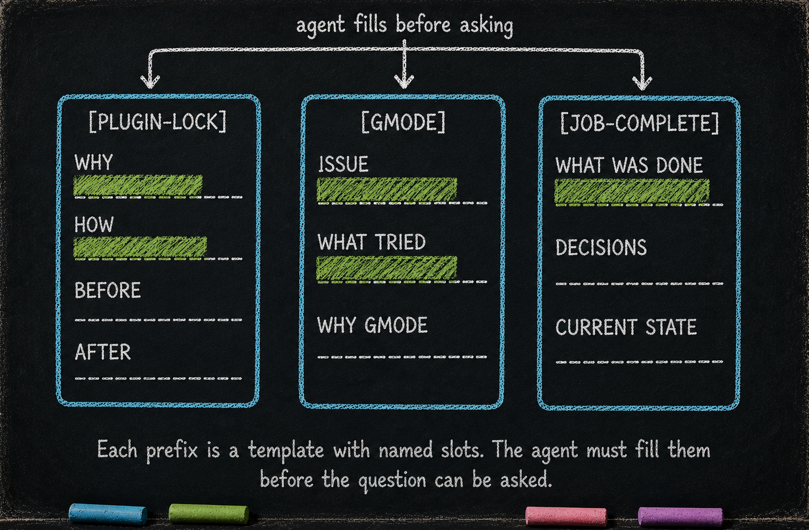

Structured Questions — question_discipline
# Structured Questions — question_discipline
Essay 5.6 of 9 — The Always-On Digital Cortex.
Essay 5.5 covered the mega-prompt that grows with every question. This part covers the gate that grew the asking surface itself into something architectural — every question the seed agent asks the user carries a registered prefix, and the rest of the seed’s machinery dispatches on those prefixes.
What it owns
question_discipline exists to make every question the seed agent asks the user structured. It works by gating every AskUserQuestion call against a small list of registered prefixes — only ceremonial questions (locks, approvals, plan-complete claims) get through. It applies on every AskUserQuestion, with one deliberate runtime exception for dispatched subagents. ⓘ
How it works — batch-cascade against the registry
A pre-call hook walks every question in the call and matches its first token against a small registry of approved prefixes hardcoded in the script. The registry currently holds ten entries — nine name very specific ceremonies (unlocking a plugin, approving a job, approving a plan stage, reporting upstream, authorizing a plugin-editing job at creation, and the others), and one ([WAITING]) is the deliberate generic — a catch-all for the cases where the seed agent legitimately needs input from the user and the situation does not fit one of the structured ceremonies. The prefixes cascade: when the agent batches multiple questions in one call, every question must carry a registered prefix, or the entire batch is rejected and the agent has to rewrite. The plugin owns no hidden state; the registry is its only state. ⓘ
Dispatched subagents are flagged as such and bypass the gate so they can ask their own internal questions without the user-facing prefix overhead. The bypass is the one runtime exception the registry admits — every other ask the seed agent makes of the user must clear a prefix, no matter which plugin’s hook is firing or which phase the agent is in.
How shape compels cognition — per-prefix admission gates
Past the registry gate, every admitted prefix lands in its owner plugin’s per-prefix handler — and that handler is where the shape lives. Each handler demands a different slot-set the seed agent must fill before the question reaches the user. [JOB-COMPLETE] checks four slots: the focused job’s name in the body, the literal Review option label, the literal Approve completion option label, and a ≥100-word body. The plan-approval pair ([PLAN-APPROVAL], [YAML-APPROVAL]) check six slots, including phase-of-firing (only VERIFY can ask) and a plan_state stage match. [PLUGIN-LOCK] and [TEST-LOCK] check a ≥100-word body plus a plugin-name or filename regex on the header. [GMODE] checks a ≥100-word body plus the [GMODE] <reason> format. ⓘ
The shape IS the cognition — filling each slot is structured reasoning the gate forces before the user is asked. The seed agent cannot ask [JOB-COMPLETE] without first writing a hundred words reviewing the job; it cannot ask [PLAN-APPROVAL] without naming the plan file and being in VERIFY; it cannot ask [GMODE] without justifying the maintenance the mode opens. The slot-set IS the agent’s compelled think-through. Each handler is a tiny stencil; what makes it work is that the agent has to fill it before the question can land.
Coverage is uneven by design. The ceremonies whose answer drives state changes — completion, plan-stage approval, plugin unlock — carry the heaviest slot enforcement. The lighter prefixes ([POINT-BOOST], [WAITING]) check format and admit. Two surfaces ([REPORT-TO-UPSTREAM], [JOB-APPROVE-CREATION]) capture the user’s answer after it lands — admission shape lives on the answer side, not the question side. Whether to extend section-header shape (WHY: / HOW: / BEFORE: / AFTER: parsed from the body) to every prefix is the next maturation question — measure where word-floor falls short before hardening the registry into stencils.
Shape lives on both sides — the question body and the option labels — and the design that closes the coverage gap is to give every prefix a body section-set that names what the question is FOR, plus an option-label set that names what the user is choosing between. [WAITING] is the test case for the body side. Today it admits any non-empty reason after the prefix; the next iteration would carry two required body sections — the actual question, and a justification block explaining why this needs user input and isn’t a decision the seed agent should make alone. The shape block becomes the seed’s own self-check: if it can’t write the justification, it doesn’t ask the question. The gate stops being a registry-membership filter and starts being a low-value-question filter — the agent reasons about whether the ask is worth the user’s attention BEFORE making it.
The same discipline generalizes to every prefix; each body shape names what the question is about, which forces the seed to decide what it’s about to do BEFORE handing the choice to the user. The coverage gap closes when every prefix carries a shape rich enough that filling it is the thinking — and the registry stops being a membership filter, becomes a slot-cognition filter that turns each ask into a deliberate, structured move.

What would break without it
Without question_discipline, every AskUserQuestion is fair game — the agent’s asking surface bloats with low-value confirmations, and the structured ceremonies (locks, approvals, plan-complete claims) lose the prefix scaffolding the rest of the always-on layer uses to dispatch on. ⓘ
What you would customize
question_discipline is the smallest plugin in the always-on layer but the most catalytic — every new ceremony in the rest of your seed needs an entry here.
You would extend the registry. The current ten entries are this prototype’s catalog of structured-asking situations. Your seed will need its own — a research seed may want [CITATION-CHECK] for verifying a quoted source; a consulting seed may want [CLIENT-APPROVAL] for the equivalent of plan-stage approval. Each new entry pairs with: a per-prefix handler in the plugin that owns the ceremony, a voice for failure messages, the slot-set the handler demands (see How shape compels cognition above — word-floor, named-token requirements, option-label requirements, phase or state matches), and a clear semantic — what kind of question this prefix marks. Names are cheap; the discipline is in keeping each prefix narrow and orthogonal — and in making the slot-set rich enough that filling it IS structured thinking.
You would tune the batch-cascade strictness. The current shape rejects the entire batch on any unprefixed question. A more lenient shape might accept partial batches (process the prefixed questions, drop the unprefixed). A stricter shape might require the same prefix across all questions in a batch (preventing prefix mixing). The cascade is the discipline; the exact rule is yours.
You would re-think the subagent bypass. The current prototype lets dispatched subagents bypass the gate so they can ask their own internal questions without prefix overhead. Your architecture may prefer to extend the same discipline downward — every subagent question also carries a prefix, every ceremony reaches recursively. The trade-off: more discipline but more ceremony in subagent dispatch.
You would add the [WAITING] escape valve or remove it. The current prototype keeps [WAITING] as a deliberate generic for situations that don’t fit a structured ceremony. Your seed may decide that the escape valve is a leak — and every question must fit one of the named ceremonies. Tightening the registry tightens the architecture; loosening it eases day-to-day work. Both are defensible.
What you would not do is leave the gate off. Without it, the asking surface bloats with casual "proceed/pause/continue" confirmations, and the rest of the always-on layer’s prefix-dispatched ceremonies (PLUGIN-LOCK, JOB-COMPLETE, PLAN-APPROVAL) lose the scaffolding they hang on.
That closes the tour of the five always-on plugins. The next part covers one of the substrate forms underneath them — the working-memory form, the CLAUDE.md hierarchy that the phasic layer writes through. The substrate as a whole holds many forms; the CLAUDE.md hierarchy is the one with a structured-edit protocol the always-on layer touches directly.
Essay 5.6 of 9 — The Always-On Digital Cortex — Hadosh Academy series on agent architecture.
Previous: Essay 5.5 — Cross-Session Memory (interaction_summary) — block-until-summarized. Next: Essay 5.7 — The CLAUDE.md Hierarchy — working memory bus, footer protocol, altered list.
Comments